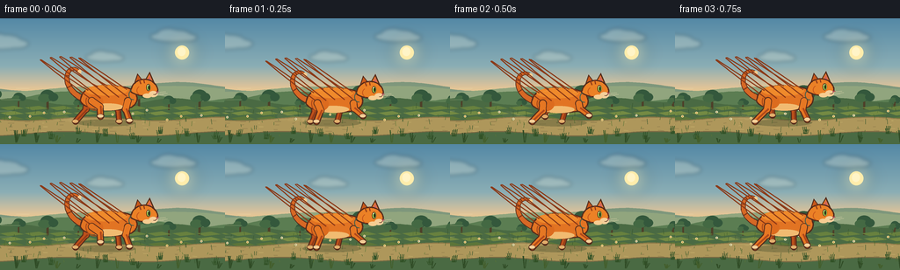
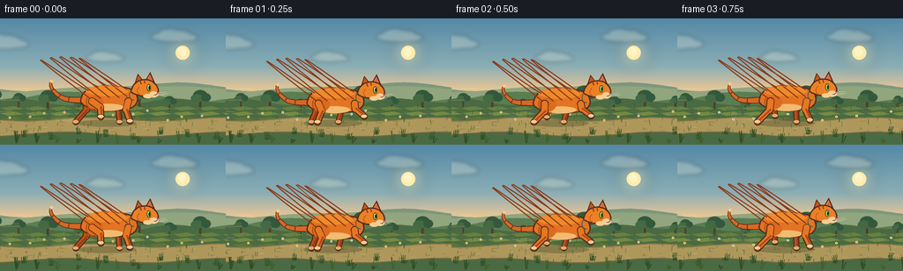
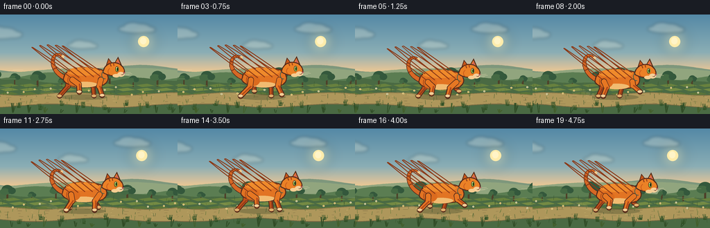
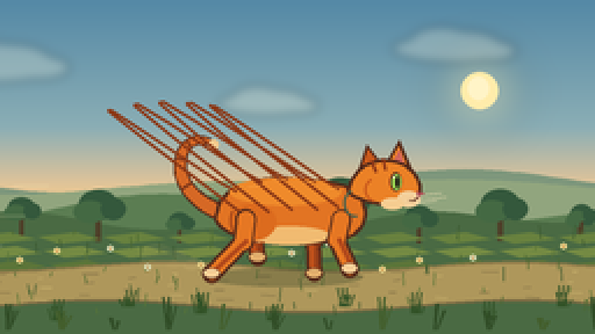
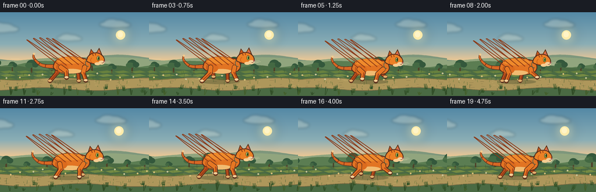

CODING AGENTS AS PIXEL WORLD MODELS
traex/DeepSeek-V4.1-Flash · instance_preservation_0003
点击播放 · 原生 RGB 像素
逐轮保存的候选
回放视频、检查图与代码变化。
每份候选均可单独播放。实际图片检查记录在下方工具轨迹中。
候选 01播放与检查图
点击播放 · 原生 RGB 像素


展开代码变化
--- 上一保存版本
+++ 本次保存版本
@@ -0,0 +1,556 @@
+from pathlib import Path
+import math
+
+import numpy as np
+from PIL import Image, ImageDraw, ImageFilter
+
+import artifact_io
+
+
+CASE_DIR = Path(__file__).resolve().parent
+W, H = 256, 144
+SS = 4
+SIZE = (W * SS, H * SS)
+TAU = math.tau
+
+
+def rgba(value):
+ if len(value) == 3:
+ return (*value, 255)
+ return value
+
+
+def pt(x, y):
+ return (round(x * SS), round(y * SS))
+
+
+def box(x0, y0, x1, y1):
+ return (round(x0 * SS), round(y0 * SS), round(x1 * SS), round(y1 * SS))
+
+
+def width(value):
+ return max(1, round(value * SS))
+
+
+def cubic(p0, p1, p2, p3, steps=18):
+ points = []
+ for index in range(steps + 1):
+ t = index / steps
+ u = 1.0 - t
+ x = u**3 * p0[0] + 3 * u**2 * t * p1[0] + 3 * u * t**2 * p2[0] + t**3 * p3[0]
+ y = u**3 * p0[1] + 3 * u**2 * t * p1[1] + 3 * u * t**2 * p2[1] + t**3 * p3[1]
+ points.append((x, y))
+ return points
+
+
+def curve_chain(start, segments, steps=18):
+ points = [start]
+ current = start
+ for p1, p2, p3 in segments:
+ points.extend(cubic(current, p1, p2, p3, steps)[1:])
+ current = p3
+ return points
+
+
+def shifted(points, dx, dy):
+ return [(x + dx, y + dy) for x, y in points]
+
+
+def tapered_line(draw, points, start_width, end_width, color):
+ count = len(points)
+ for index in range(count - 1):
+ t = index / max(1, count - 2)
+ stroke = start_width + (end_width - start_width) * t
+ draw.line([pt(*points[index]), pt(*points[index + 1])], fill=rgba(color), width=width(stroke))
+ if index > 0:
+ cx, cy = points[index]
+ radius = stroke / 2
+ draw.ellipse(box(cx - radius, cy - radius, cx + radius, cy + radius), fill=rgba(color))
+ cx, cy = points[-1]
+ radius = end_width / 2
+ draw.ellipse(box(cx - radius, cy - radius, cx + radius, cy + radius), fill=rgba(color))
+
+
+def capsule(draw, start, end, stroke, color):
+ draw.line([pt(*start), pt(*end)], fill=rgba(color), width=width(stroke))
+ for x, y in (start, end):
+ radius = stroke / 2
+ draw.ellipse(box(x - radius, y - radius, x + radius, y + radius), fill=rgba(color))
+
+
+def alpha_layer(size, draw_fn):
+ layer = Image.new("RGBA", size, (0, 0, 0, 0))
+ draw_fn(ImageDraw.Draw(layer))
+ return layer
+
+
+def composite(canvas, layer):
+ return Image.alpha_composite(canvas, layer)
+
+
+def blend(c1, c2, t):
+ return tuple(round(a + (b - a) * t) for a, b in zip(c1, c2))
+
+
+def make_gradient():
+ stops = [
+ (0.00, (85, 137, 166)),
+ (0.38, (139, 174, 181)),
+ (0.55, (224, 196, 153)),
+ (0.61, (239, 203, 140)),
+ (0.65, (137, 157, 86)),
+ (0.79, (102, 126, 62)),
+ (1.00, (55, 79, 43)),
+ ]
+ ys = np.linspace(0.0, 1.0, H)
+ rows = np.zeros((H, 3), dtype=np.float32)
+ for index in range(len(stops) - 1):
+ y0, c0 = stops[index]
+ y1, c1 = stops[index + 1]
+ mask = (ys >= y0) & (ys <= y1)
+ if not np.any(mask):
+ continue
+ t = ((ys[mask] - y0) / (y1 - y0))[:, None]
+ rows[mask] = np.asarray(c0)[None, :] * (1 - t) + np.asarray(c1)[None, :] * t
+ gradient = np.repeat(rows[:, None, :], W, axis=1).astype(np.uint8)
+ image = Image.fromarray(gradient, "RGB").resize(SIZE, Image.Resampling.BICUBIC)
+ return image.convert("RGBA")
+
+
+def draw_sky(canvas, frame, scroll, a):
+ draw = ImageDraw.Draw(canvas)
+
+ sun_x = 207 - scroll * 0.025
+ sun_y = 39
+ glow = alpha_layer(SIZE, lambda layer: None)
+ glow_draw = ImageDraw.Draw(glow)
+ for radius, alpha in ((22, 22), (17, 32), (12, 52), (8, 90)):
+ glow_draw.ellipse(box(sun_x - radius, sun_y - radius, sun_x + radius, sun_y + radius), fill=(255, 228, 154, alpha))
+ glow = glow.filter(ImageFilter.GaussianBlur(7 * SS))
+ canvas = composite(canvas, glow)
+ draw = ImageDraw.Draw(canvas)
+ draw.ellipse(box(sun_x - 8, sun_y - 8, sun_x + 8, sun_y + 8), fill=(255, 236, 171, 255))
+ draw.ellipse(box(sun_x - 5, sun_y - 6, sun_x + 4, sun_y + 4), fill=(255, 244, 199, 255))
+
+ clouds = [
+ (34, 27, 1.05, 0.08),
+ (153, 44, 0.72, 0.12),
+ (231, 20, 0.88, 0.06),
+ ]
+ for base_x, y, scale, factor in clouds:
+ cx = (base_x - scroll * factor) % (W + 70) - 35
+ cloud = alpha_layer(SIZE, lambda layer: None)
+ cd = ImageDraw.Draw(cloud)
+ blobs = [
+ (-15, 1, 14, 5),
+ (-5, -3, 15, 7),
+ (7, -1, 17, 7),
+ (20, 2, 12, 5),
+ (0, 3, 25, 5),
+ ]
+ for dx, dy, rx, ry in blobs:
+ cd.ellipse(
+ box(cx + dx * scale - rx * scale, y + dy * scale - ry * scale,
+ cx + dx * scale + rx * scale, y + dy * scale + ry * scale),
+ fill=(255, 247, 220, 60),
+ )
+ cloud = cloud.filter(ImageFilter.GaussianBlur(2.2 * SS))
+ canvas = composite(canvas, cloud)
+ return canvas
+
+
+def hill_polygon(base_y, amplitude, frequency, phase, scroll, factor):
+ points = []
+ for x in range(-8, W + 9, 4):
+ world = x + scroll * factor
+ y = (
+ base_y
+ + amplitude * math.sin(world * frequency + phase)
+ + amplitude * 0.34 * math.sin(world * frequency * 2.31 + phase * 0.7)
+ )
+ points.append((x, y))
+ points.extend([(W + 8, H + 4), (-8, H + 4)])
+ return points
+
+
+def draw_landscape(canvas, scroll, a):
+ draw = ImageDraw.Draw(canvas)
+
+ far = hill_polygon(78, 4.0, 0.022, 0.5, scroll, 0.10)
+ draw.polygon([pt(*p) for p in far], fill=(126, 151, 124, 255))
+ far_light = hill_polygon(80, 3.0, 0.019, 1.7, scroll, 0.13)
+ draw.polygon([pt(*p) for p in far_light], fill=(145, 165, 126, 255))
+
+ mid = hill_polygon(88, 5.2, 0.025, 2.0, scroll, 0.22)
+ draw.polygon([pt(*p) for p in mid], fill=(91, 125, 82, 255))
+ near = hill_polygon(96, 3.8, 0.032, 4.4, scroll, 0.34)
+ draw.polygon([pt(*p) for p in near], fill=(74, 106, 67, 255))
+
+ tree_positions = [-35, -4, 28, 61, 94, 129, 164, 198, 232, 267, 302]
+ for index, base in enumerate(tree_positions):
+ sx = (base - scroll * 0.38) % (W + 80) - 40
+ scale = 0.65 + 0.18 * ((index * 7) % 5)
+ trunk_y = 101 + 2 * math.sin(index * 1.7)
+ trunk_h = 10 * scale
+ draw.rectangle(box(sx - 1.0 * scale, trunk_y - trunk_h, sx + 1.0 * scale, trunk_y + 2), fill=(78, 64, 41, 255))
+ canopy = (52, 88, 60, 255)
+ canopy_hi = (68, 105, 67, 255)
+ draw.ellipse(box(sx - 7 * scale, trunk_y - trunk_h - 7 * scale, sx + 7 * scale, trunk_y - trunk_h + 4 * scale), fill=canopy)
+ draw.ellipse(box(sx - 9 * scale, trunk_y - trunk_h - 3 * scale, sx + 3 * scale, trunk_y - trunk_h + 5 * scale), fill=canopy_hi)
+ draw.ellipse(box(sx + 1 * scale, trunk_y - trunk_h - 4 * scale, sx + 10 * scale, trunk_y - trunk_h + 4 * scale), fill=canopy)
+
+ # Field bands give the camera move a readable parallax rhythm.
+ band_colors = [
+ (104, 129, 62, 255),
+ (116, 138, 67, 255),
+ (92, 117, 57, 255),
+ (125, 143, 72, 255),
+ ]
+ for index, y in enumerate((102, 108, 114, 121)):
+ offset = (scroll * (0.52 + index * 0.08)) % 28
+ for k in range(-2, 12):
+ x = k * 28 + offset
+ draw.polygon(
+ [pt(x, y), pt(x + 16, y - 2), pt(x + 27, y + 1), pt(x + 9, y + 3)],
+ fill=band_colors[index],
+ )
+
+ # Worn trail beneath the cat.
+ top_edge = []
+ bottom_edge = []
+ for x in range(-4, W + 6, 4):
+ world = x + scroll
+ top = 115 + 2.0 * math.sin(world * 0.042 + 0.4)
+ bottom = 132 + 2.6 * math.sin(world * 0.035 + 2.1)
+ top_edge.append((x, top))
+ bottom_edge.append((x, bottom))
+ path_points = top_edge + list(reversed(bottom_edge))
+ draw.polygon([pt(*p) for p in path_points], fill=(174, 151, 91, 255))
+ draw.line([pt(*p) for p in top_edge], fill=(139, 121, 73, 255), width=width(1.2))
+ draw.line([pt(*p) for p in bottom_edge], fill=(118, 105, 66, 255), width=width(1.3))
+
+ for index in range(42):
+ wx = (index * 19 + 7) % (W + 30)
+ sx = (wx - scroll * 1.02) % (W + 30) - 15
+ sy = 117 + ((index * 11) % 13)
+ length = 2 + (index * 5) % 6
+ color = (143, 124, 76, 255) if index % 3 else (194, 171, 105, 255)
+ draw.line([pt(sx, sy), pt(sx + length, sy + 0.4 * math.sin(index))], fill=color, width=width(0.65))
+
+ return canvas
+
+
+def draw_ground_detail(canvas, scroll, a):
+ draw = ImageDraw.Draw(canvas)
+ grass_colors = [(74, 103, 48, 255), (89, 117, 54, 255), (57, 87, 46, 255)]
+
+ for index in range(96):
+ wx = (index * 17 + (index * index * 7) % 31) % (W + 36)
+ sx = (wx - scroll * (0.78 + (index % 4) * 0.11)) % (W + 36) - 18
+ sy = 101 + ((index * 13) % 36)
+ length = 1.8 + ((index * 7) % 9) * 0.52
+ lean = 0.8 * math.sin(a * 0.8 + index * 1.31)
+ draw.line([pt(sx, sy), pt(sx + lean, sy - length)], fill=grass_colors[index % 3], width=width(0.55))
+
+ for index in range(14):
+ wx = (index * 39 + 15) % (W + 40)
+ sx = (wx - scroll * 0.82) % (W + 40) - 20
+ sy = 105 + (index * 7) % 12
+ petal = (241, 220, 146, 255) if index % 2 else (223, 228, 189, 255)
+ draw.ellipse(box(sx - 1.3, sy - 1.3, sx + 1.3, sy + 1.3), fill=petal)
+ draw.ellipse(box(sx - 0.4, sy - 0.4, sx + 0.4, sy + 0.4), fill=(181, 122, 53, 255))
+
+ # A few darker tufts anchor the trail edge.
+ for index in range(26):
+ wx = (index * 31 + 9) % (W + 24)
+ sx = (wx - scroll * 1.08) % (W + 24) - 12
+ sy = 132 + (index * 3) % 9
+ height = 3 + (index * 5) % 7
+ sway = 1.2 * math.sin(a * 0.9 + index)
+ for blade in (-1, 0, 1):
+ draw.line(
+ [pt(sx + blade * 1.2, sy), pt(sx + blade * 2.0 + sway, sy - height)],
+ fill=(50, 82, 39, 255),
+ width=width(0.7),
+ )
+ return canvas
+
+
+def draw_speed_and_dust(canvas, frame, scroll, a, cat_x, anchor_y):
+ layer = alpha_layer(SIZE, lambda draw: None)
+ draw = ImageDraw.Draw(layer)
+ for index in range(5):
+ sx = (cat_x - 74 - index * 17 - scroll * 0.45) % (W + 90) - 35
+ sy = 80 + (index * 13) % 32
+ length = 15 + (index * 7) % 18
+ draw.line([pt(sx, sy), pt(sx + length, sy)], fill=(255, 244, 193, 48), width=width(0.7))
+
+ for age in range(4):
+ phase = (frame - age) % 20
+ sx = cat_x - 39 - age * 7.5
+ sy = 117 - age * 2.0 - 1.5 * math.sin(a - age * 0.6)
+ radius = 2.3 + age * 1.7
+ alpha = max(10, 62 - age * 14)
+ draw.ellipse(box(sx - radius, sy - radius * 0.65, sx + radius, sy + radius * 0.65), fill=(216, 186, 122, alpha))
+ canvas = composite(canvas, layer)
+ return canvas
+
+
+def leg_points(root, foot, kind, swing):
+ rx, ry = root
+ fx, fy = foot
+ dx, dy = fx - rx, fy - ry
+ if kind == "front":
+ bend_x = -3.2 - 1.6 * max(0.0, swing)
+ bend_y = -1.2
+ else:
+ bend_x = 4.2 + 1.8 * max(0.0, -swing)
+ bend_y = -1.7
+ joint = (rx + dx * 0.49 + bend_x, ry + dy * 0.48 + bend_y)
+ return joint
+
+
+def draw_leg(draw, root, foot, kind, swing, colors, paw_color, stroke):
+ outline, base, shade = colors
+ joint = leg_points(root, foot, kind, swing)
+ capsule(draw, root, joint, stroke + 1.8, outline)
+ capsule(draw, joint, foot, stroke + 1.1, outline)
+ capsule(draw, root, joint, stroke, base)
+ capsule(draw, joint, foot, stroke * 0.78, base)
+ # A short shadow on the rear edge makes the far legs recede.
+ capsule(draw, (joint[0] + 1.2, joint[1]), (foot[0] + 0.8, foot[1] - 1.0), stroke * 0.28, shade)
+
+ px, py = foot
+ draw.ellipse(box(px - 4.2, py - 2.6, px + 3.8, py + 2.3), fill=rgba(outline))
+ draw.ellipse(box(px - 3.5, py - 2.2, px + 3.2, py + 1.6), fill=rgba(paw_color))
+
+
+def draw_tail(canvas, draw, ax, ay, a):
+ sway = 2.1 * math.sin(a * 0.72 - 0.4)
+ tail = curve_chain(
+ (ax - 31, ay - 3),
+ [
+ ((ax - 44, ay - 7), (ax - 53, ay - 19 + sway), (ax - 51, ay - 29 + sway)),
+ ((ax - 50, ay - 38 + sway), (ax - 41, ay - 39 + sway), (ax - 37, ay - 34 + sway * 0.4)),
+ ],
+ steps=20,
+ )
+ tapered_line(draw, tail, 7.8, 3.0, (84, 42, 26, 255))
+ tapered_line(draw, tail, 6.0, 1.8, (214, 104, 37, 255))
+
+ # Tabby bands on the raised tail.
+ for index, fraction in enumerate((0.32, 0.51, 0.69)):
+ pos = tail[int((len(tail) - 1) * fraction)]
+ prev = tail[max(0, int((len(tail) - 1) * fraction) - 1)]
+ nxt = tail[min(len(tail) - 1, int((len(tail) - 1) * fraction) + 1)]
+ tx, ty = nxt[0] - prev[0], nxt[1] - prev[1]
+ length = math.hypot(tx, ty) or 1.0
+ nx, ny = -ty / length, tx / length
+ band = 2.5 - index * 0.25
+ draw.line(
+ [pt(pos[0] - nx * band, pos[1] - ny * band), pt(pos[0] + nx * band, pos[1] + ny * band)],
+ fill=(130, 56, 25, 255),
+ width=width(1.25),
+ )
+
+ tip = tail[-1]
+ draw.ellipse(box(tip[0] - 2.2, tip[1] - 2.2, tip[0] + 2.2, tip[1] + 2.2), fill=(243, 203, 142, 255))
+
+
+def body_outline(ax, ay):
+ return curve_chain(
+ (ax - 36, ay - 4),
+ [
+ ((ax - 35, ay - 15), (ax - 20, ay - 21), (ax, ay - 19)),
+ ((ax + 15, ay - 18), (ax + 27, ay - 16), (ax + 28, ay - 8)),
+ ((ax + 31, ay - 3), (ax + 28, ay + 6), (ax + 19, ay + 8)),
+ ((ax + 7, ay + 11), (ax - 15, ay + 11), (ax - 26, ay + 7)),
+ ((ax - 35, ay + 4), (ax - 38, ay), (ax - 36, ay - 4)),
+ ],
+ steps=22,
+ )
+
+
+def draw_body(canvas, draw, ax, ay, a):
+ body = body_outline(ax, ay)
+ draw.polygon([pt(*p) for p in body], fill=(226, 116, 35, 255), outline=(83, 42, 27, 255), width=width(1.55))
+
+ # Warm back, pale belly, and a soft rear haunch.
+ draw.ellipse(box(ax - 30, ay - 19, ax + 18, ay - 7), fill=(239, 138, 43, 255))
+ draw.ellipse(box(ax - 22, ay + 2, ax + 13, ay + 10), fill=(241, 187, 113, 255))
+ draw.ellipse(box(ax - 30, ay - 8, ax - 10, ay + 8), fill=(220, 107, 30, 255))
+ draw.arc(box(ax - 30, ay - 11, ax - 9, ay + 10), 65, 205, fill=(168, 72, 26, 255), width=width(1.0))
+
+ # Tabby stripes follow the curve of the back.
+ stripe = (139, 57, 23, 255)
+ for x0, y0, x1, y1, bend in [
+ (-27, -13, -24, -3, -1.4),
+ (-16, -17, -13, -4, -1.0),
+ (-5, -18, -3, -5, -0.6),
+ (7, -17, 8, -5, 0.2),
+ (17, -14, 17, -6, 0.8),
+ ]:
+ mid = ((x0 + x1) / 2 + bend, (y0 + y1) / 2 + 1.2)
+ points = cubic((ax + x0, ay + y0), (ax + x0 + bend, ay + y0 + 2), mid, (ax + x1, ay + y1), 7)
+ draw.line([pt(*p) for p in points], fill=stripe, width=width(1.35))
+
+ # Fur highlights break up the flat vector shapes.
+ for dx, dy, length in [(-22, -15, 5), (-11, -18, 6), (2, -17, 5), (12, -14, 4)]:
+ draw.line([pt(ax + dx, ay + dy), pt(ax + dx + length, ay + dy - 0.7)], fill=(255, 167, 72, 255), width=width(0.55))
+
+ return body
+
+
+def draw_head(canvas, draw, ax, ay, a):
+ head_y = ay + 1.0 * math.sin(a * 2 + 0.8)
+ dark = (83, 42, 27, 255)
+
+ # Far ear first, then the near ear.
+ draw.polygon(
+ [pt(ax + 25, head_y - 21), pt(ax + 29, head_y - 33), pt(ax + 36, head_y - 24)],
+ fill=(199, 88, 27, 255), outline=dark, width=width(1.1),
+ )
+ draw.polygon(
+ [pt(ax + 36, head_y - 23), pt(ax + 43, head_y - 35), pt(ax + 49, head_y - 21)],
+ fill=(235, 128, 37, 255), outline=dark, width=width(1.2),
+ )
+ draw.polygon(
+ [pt(ax + 39, head_y - 23), pt(ax + 43, head_y - 31), pt(ax + 46, head_y - 22)],
+ fill=(209, 100, 90, 255),
+ )
+
+ head = curve_chain(
+ (ax + 21, head_y - 15),
+ [
+ ((ax + 23, head_y - 23), (ax + 30, head_y - 27), (ax + 37, head_y - 27)),
+ ((ax + 44, head_y - 27), (ax + 50, head_y - 23), (ax + 52, head_y - 17)),
+ ((ax + 54, head_y - 13), (ax + 51, head_y - 8), (ax + 46, head_y - 7)),
+ ((ax + 38, head_y - 6), (ax + 28, head_y - 7), (ax + 22, head_y - 11)),
+ ((ax + 20, head_y - 12), (ax + 20, head_y - 14), (ax + 21, head_y - 15)),
+ ],
+ steps=18,
+ )
+ draw.polygon([pt(*p) for p in head], fill=(235, 129, 38, 255), outline=dark, width=width(1.55))
+
+ # Forehead and cheek markings.
+ draw.line([pt(ax + 31, head_y - 26), pt(ax + 33, head_y - 21)], fill=(142, 57, 24, 255), width=width(1.35))
+ draw.line([pt(ax + 36, head_y - 27), pt(ax + 37, head_y - 22)], fill=(142, 57, 24, 255), width=width(1.15))
+ draw.arc(box(ax + 28, head_y - 19, ax + 39, head_y - 8), 105, 240, fill=(199, 87, 27, 255), width=width(1.1))
+
+ # Cream cheek and muzzle.
+ draw.ellipse(box(ax + 42, head_y - 13, ax + 52, head_y - 6), fill=(244, 207, 154, 255))
+ draw.ellipse(box(ax + 35, head_y - 10, ax + 45, head_y - 5), fill=(246, 205, 145, 255))
+
+ # Green eye with a vertical pupil and pinpoint catchlight.
+ draw.ellipse(box(ax + 39, head_y - 21, ax + 44, head_y - 13), fill=dark)
+ draw.ellipse(box(ax + 39.7, head_y - 20.3, ax + 43.7, head_y - 13.7), fill=(155, 211, 82, 255))
+ draw.ellipse(box(ax + 41.2, head_y - 19.6, ax + 43.1, head_y - 14.4), fill=(37, 35, 23, 255))
+ draw.ellipse(box(ax + 40.2, head_y - 19.7, ax + 41.1, head_y - 18.6), fill=(249, 248, 211, 255))
+
+ # Nose, mouth, and whiskers.
+ draw.polygon(
+ [pt(ax + 50.5, head_y - 13), pt(ax + 54, head_y - 12), pt(ax + 50.7, head_y - 10)],
+ fill=(164, 66, 75, 255),
+ )
+ draw.line([pt(ax + 50.7, head_y - 10), pt(ax + 49.2, head_y - 8.8), pt(ax + 47.2, head_y - 9.1)], fill=dark, width=width(0.65))
+ for dy, length in ((-11.2, 11), (-9.4, 13), (-7.8, 9)):
+ draw.line([pt(ax + 50, head_y + dy), pt(ax + 50 + length, head_y + dy - 1.2)], fill=(249, 229, 188, 255), width=width(0.42))
+
+ return head_y
+
+
+def draw_cat(canvas, frame, a):
+ draw = ImageDraw.Draw(canvas)
+ bob = -1.8 * math.cos(2 * a + 0.35)
+ ax = 127 + 1.7 * math.sin(a * 0.5 + 0.2)
+ ay = 97 + bob
+
+ # Long, soft shadow on the trail.
+ shadow = alpha_layer(SIZE, lambda layer: None)
+ sd = ImageDraw.Draw(shadow)
+ sd.ellipse(box(ax - 40, 115.5, ax + 27, 123.5), fill=(57, 68, 38, 82))
+ canvas = composite(canvas, shadow)
+ draw = ImageDraw.Draw(canvas)
+
+ draw_tail(canvas, draw, ax, ay, a)
+
+ ground_y = 118.0
+ gait = a
+ swing = {
+ "far_front": math.sin(gait + math.pi + 0.15),
+ "near_front": math.sin(gait + 0.15),
+ "far_hind": math.sin(gait + math.pi + 2.25),
+ "near_hind": math.sin(gait + 2.25),
+ }
+
+ def foot(rx, swing_value, lift_scale, stride):
+ fx = ax + rx + stride * swing_value
+ lift = lift_scale * max(0.0, swing_value)
+ return (fx, ground_y - lift)
+
+ far_colors = ((85, 42, 26, 255), (190, 80, 27, 255), (145, 59, 24, 255))
+ near_colors = ((83, 42, 27, 255), (230, 119, 35, 255), (177, 72, 27, 255))
+ far_paw = (226, 174, 108, 255)
+ near_paw = (246, 206, 150, 255)
+
+ far_hind_root = (ax - 29, ay - 1)
+ far_hind_foot = foot(-31, swing["far_hind"], 7.2, 13.5)
+ draw_leg(draw, far_hind_root, far_hind_foot, "hind", swing["far_hind"], far_colors, far_paw, 6.1)
+
+ far_front_root = (ax + 12, ay - 1)
+ far_front_foot = foot(10, swing["far_front"], 7.0, 12.0)
+ draw_leg(draw, far_front_root, far_front_foot, "front", swing["far_front"], far_colors, far_paw, 5.6)
+
+ draw_body(canvas, draw, ax, ay, a)
+ head_y = draw_head(canvas, draw, ax, ay, a)
+
+ near_hind_root = (ax - 23, ay - 1)
+ near_hind_foot = foot(-24, swing["near_hind"], 7.8, 14.0)
+ draw_leg(draw, near_hind_root, near_hind_foot, "hind", swing["near_hind"], near_colors, near_paw, 7.0)
+
+ near_front_root = (ax + 18, ay - 1)
+ near_front_foot = foot(18, swing["near_front"], 7.4, 12.5)
+ draw_leg(draw, near_front_root, near_front_foot, "front", swing["near_front"], near_colors, near_paw, 6.7)
+
+ # A tiny collar glint separates the head from the torso.
+ draw.arc(box(ax + 19, ay - 14, ax + 29, ay - 2), 80, 250, fill=(72, 96, 75, 255), width=width(1.0))
+ return canvas
+
+
+def draw_foreground(canvas, scroll, a):
+ draw = ImageDraw.Draw(canvas)
+ for index in range(28):
+ wx = (index * 23 + 5) % (W + 20)
+ sx = (wx - scroll * 1.22) % (W + 20) - 10
+ sy = 142
+ height = 5 + (index * 9) % 12
+ sway = 1.8 * math.sin(a * 1.1 + index * 1.7)
+ shade = (48, 76, 38, 255) if index % 3 else (67, 94, 44, 255)
+ draw.line([pt(sx, sy), pt(sx + sway, sy - height)], fill=shade, width=width(0.9))
+ draw.line([pt(sx + 1, sy), pt(sx + 3 + sway, sy - height * 0.74)], fill=shade, width=width(0.7))
+ return canvas
+
+
+def render_frame(frame):
+ a = TAU * frame / 7.0
+ scroll = frame * 10.4
+ canvas = make_gradient()
+ canvas = draw_sky(canvas, frame, scroll, a)
+ canvas = draw_landscape(canvas, scroll, a)
+ canvas = draw_ground_detail(canvas, scroll, a)
+ cat_x = 127 + 1.7 * math.sin(a * 0.5 + 0.2)
+ canvas = draw_speed_and_dust(canvas, frame, scroll, a, cat_x, 97)
+ canvas = draw_cat(canvas, frame, a)
+ canvas = draw_foreground(canvas, scroll, a)
+ image = canvas.convert("RGB").resize((W, H), Image.Resampling.LANCZOS)
+ return np.asarray(image, dtype=np.uint8)
+
+
+def main():
+ frames = np.stack([render_frame(frame) for frame in range(20)], axis=0)
+ artifact_io.save(frames, CASE_DIR)
+ print(f"saved {len(frames)} frames to {CASE_DIR}")
+
+
+if __name__ == "__main__":
+ main()
候选 02播放与检查图
点击播放 · 原生 RGB 像素


展开代码变化
--- 上一保存版本
+++ 本次保存版本
@@ -326,27 +326,27 @@
def draw_tail(canvas, draw, ax, ay, a):
- sway = 2.1 * math.sin(a * 0.72 - 0.4)
+ sway = 2.2 * math.sin(a * 0.72 - 0.4)
tail = curve_chain(
- (ax - 31, ay - 3),
+ (ax - 31, ay - 2),
[
- ((ax - 44, ay - 7), (ax - 53, ay - 19 + sway), (ax - 51, ay - 29 + sway)),
- ((ax - 50, ay - 38 + sway), (ax - 41, ay - 39 + sway), (ax - 37, ay - 34 + sway * 0.4)),
+ ((ax - 42, ay - 3), (ax - 52, ay - 1 + sway * 0.3), (ax - 60, ay - 6 + sway)),
+ ((ax - 68, ay - 12 + sway), (ax - 72, ay - 18 + sway * 1.4), (ax - 69, ay - 23 + sway)),
],
steps=20,
)
- tapered_line(draw, tail, 7.8, 3.0, (84, 42, 26, 255))
- tapered_line(draw, tail, 6.0, 1.8, (214, 104, 37, 255))
+ tapered_line(draw, tail, 7.6, 2.8, (84, 42, 26, 255))
+ tapered_line(draw, tail, 5.9, 1.6, (214, 104, 37, 255))
# Tabby bands on the raised tail.
- for index, fraction in enumerate((0.32, 0.51, 0.69)):
+ for index, fraction in enumerate((0.30, 0.50, 0.70)):
pos = tail[int((len(tail) - 1) * fraction)]
prev = tail[max(0, int((len(tail) - 1) * fraction) - 1)]
nxt = tail[min(len(tail) - 1, int((len(tail) - 1) * fraction) + 1)]
tx, ty = nxt[0] - prev[0], nxt[1] - prev[1]
length = math.hypot(tx, ty) or 1.0
nx, ny = -ty / length, tx / length
- band = 2.5 - index * 0.25
+ band = 2.4 - index * 0.22
draw.line(
[pt(pos[0] - nx * band, pos[1] - ny * band), pt(pos[0] + nx * band, pos[1] + ny * band)],
fill=(130, 56, 25, 255),
@@ -354,7 +354,7 @@
)
tip = tail[-1]
- draw.ellipse(box(tip[0] - 2.2, tip[1] - 2.2, tip[0] + 2.2, tip[1] + 2.2), fill=(243, 203, 142, 255))
+ draw.ellipse(box(tip[0] - 1.8, tip[1] - 1.8, tip[0] + 1.8, tip[1] + 1.8), fill=(243, 203, 142, 255))
def body_outline(ax, ay):
可观测工具轨迹
实际执行的命令与返回图片。
命令 1exit 0
/bin/bash -lc 'ls -la'
命令 2exit 0
/bin/bash -lc "pwd && rg --files -g 'prompt.txt' -g 'GENERATION_RULES.md' -g 'task_spec.json' -g '"'!*.mp4'"'"
命令 3exit 0
/bin/bash -lc 'cat prompt.txt'
命令 4exit 0
/bin/bash -lc 'cat GENERATION_RULES.md'
命令 5exit 0
/bin/bash -lc 'cat task_spec.json'
命令 6exit 0
/bin/bash -lc "sed -n '1,260p' artifact_io.py"
命令 7exit 0
/bin/bash -lc "sed -n '1,240p' player_template.html"
命令 8exit 0
/bin/bash -lc 'python generate.py'
命令 9exit 0
/bin/bash -lc "python - <<'PY'
from PIL import Image
im=Image.open('frames/03.png')
im.resize((1024,576),Image.Resampling.NEAREST).save('.tmp/frame03_big.png')
PY"命令 10exit 0
/bin/bash -lc 'python generate.py'
命令 11exit 0
/bin/bash -lc "find . -maxdepth 2 -type f -printf '%P %s bytes\\n' | sort"
命令 12exit 0
/bin/bash -lc "command -v ffmpeg || true; command -v chromium || true; command -v google-chrome || true; python - <<'PY'
try:
import playwright; print('playwright yes')
except Exception as e: print('playwright no')
PY"命令 13exit 0
/bin/bash -lc "python - <<'PY'
import numpy as np
from PIL import Image
from pathlib import Path
p=np.load('pixels.npz')['pixels']
print('npz',p.shape,p.dtype,'range',int(p.min()),int(p.max()),'unique',len(np.unique(p)))
files=sorted(Path('frames').glob('*.png'))
print('png_count',len(files))
sizes={Image.open(f).size for f in files}
print('png_sizes',sizes)
print('index_bytes',Path('index.html').stat().st_size)
PY"命令 14exit 1
/bin/bash -lc "python - <<'PY'
import asyncio
from pathlib import Path
from playwright.async_api import async_playwright
async def main():
async with async_playwright() as p:
browser = await p.chromium.launch(headless=True)
page = await browser.new_page(viewport={\"width\": 1000, \"height\": 700})
errors = []
page.on(\"pageerror\", lambda exc: errors.append(str(exc)))
await page.goto(Path(\"index.html\").resolve().as_uri())
await page.wait_for_function(\"window.__pixelReady === true\")
state = await page.evaluate(\"\"\"() => ({caption: document.getElementById('caption').textContent, width: canvas.width, height: canvas.height, time: document.getElementById('time').textContent})\"\"\")
await page.click(\"#play\")
await page.wait_for_timeout(600)
await page.click(\"#play\")
await page.screenshot(path=\".tmp/player_check.png\", full_page=True)
print(state)
print(\"page_errors\", errors)
await browser.close()
asyncio.run(main())
PY"命令 15exit 1
/bin/bash -lc 'TMPDIR="$PWD/.tmp" python - <<'"'PY'
import asyncio
from pathlib import Path
from playwright.async_api import async_playwright
async def main():
async with async_playwright() as p:
browser = await p.chromium.launch(headless=True)
page = await browser.new_page(viewport={\"width\": 1000, \"height\": 700})
errors = []
page.on(\"pageerror\", lambda exc: errors.append(str(exc)))
await page.goto(Path(\"index.html\").resolve().as_uri())
await page.wait_for_function(\"window.__pixelReady === true\")
state = await page.evaluate(\"\"\"() => ({caption: document.getElementById('caption').textContent, width: canvas.width, height: canvas.height, time: document.getElementById('time').textContent})\"\"\")
await page.click(\"#play\")
await page.wait_for_timeout(600)
await page.click(\"#play\")
await page.screenshot(path=\".tmp/player_check.png\", full_page=True)
print(state)
print(\"page_errors\", errors)
await browser.close()
asyncio.run(main())
PY"命令 16exit 0
/bin/bash -lc "python - <<'PY'
import base64, json, re
from pathlib import Path
import numpy as np
html = Path('index.html').read_text()
payload = json.loads(re.search(r'const DATA=(\\{.*?\\}),W=', html, re.S).group(1))
def unpack(s):
return np.frombuffer(base64.b64decode(s), dtype='<u4')
frames = [unpack(payload['first']).copy()]
for encoded in payload['deltas']:
current = frames[-1].copy()
packet = unpack(encoded)
i = 0
while i < len(packet):
start, count = int(packet[i]), int(packet[i + 1])
current[start:start + count] = packet[i + 2:i + 2 + count]
i += count + 2
frames.append(current)
frames = np.stack(frames).reshape(20, 144, 256)
saved = np.load('pixels.npz')['pixels'].transpose(2, 0, 1)
print('embedded_frames', frames.shape)
print('matches_npz', np.array_equal(frames, saved))
print('distinct_frames', len({f.tobytes() for f in frames}))
print('caption', payload['caption'])
PY"视觉工具实际返回图片 1

视觉工具实际返回图片 2
视觉工具实际返回图片 3

视觉工具实际返回图片 4

保存候选 2 份；完成命令 16 次；可验证图片返回 4 张。原始 API 响应与完整日志保留在本地。